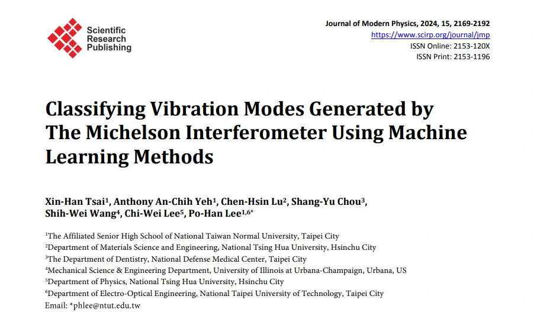
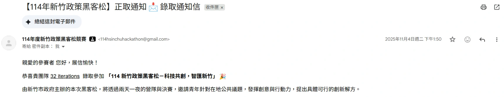

S02MOE international competition grant教育部國際學術技藝能競賽補助Travel support for representing NTHU at an international academic and skills competition.獲出國支持，代表清華參加國際性學術技藝能競賽。
R02NTHU varsity football team國立清華大學足球校隊Varsity team member alongside a full physics and EECS course load.在物理與電資雙主修課程之外參與校隊訓練。
R03Academia Sinica summer intern中央研究院暑期實習Research placement with Dr. Jun-Cheng Chen across IIS and the Research Center for IT Innovation.於資訊科學所／資訊科技創新研究中心，在陳駿丞博士指導下進行研究。SOURCE ↗來源 ↗
R04Part-time Research Assistant, Academia Sinica中央研究院資訊科技創新研究中心兼任研究助理Continued diffusion-model research after the summer internship.暑期實習後持續投入擴散模型與生成式影像研究。
R05Teaching Assistant, Introduction to Machine Learning《機器學習概論》課程助教Supported NTHU students with modelling concepts and implementation practice.協助清華學生理解模型概念、實作與除錯。
O
Research & competition outcomes研究與競賽成果
09
O01Gold Medal, iGEM Grand JamboreeiGEM Grand Jamboree 金牌Presented NTHU-Taiwan's NanoCircDx project in Paris as Dry Lab Lead.以程式模擬組組長身分赴巴黎發表 NTHU-Taiwan 的 NanoCircDx 專案。DETAIL詳情SOURCE ↗來源 ↗
O02Journal of Modern Physics paper《Journal of Modern Physics》期刊論文Machine-learning classification of Michelson-interferometer vibration modes.以機器學習分類 Michelson 干涉儀產生的振動模式。DETAIL詳情SOURCE ↗來源 ↗
O032nd overall + 2nd in gravitational waves, NSF HDR Year 1NSF HDR 首屆總積分全球第二、重力波項目第二Led 20iterations and presented the work at the AAAI-25 Workshop in Philadelphia.帶領 20iterations，並受邀於費城 AAAI-25 Workshop 發表技術成果。DETAIL詳情SOURCE ↗來源 ↗
O041st place, Mei-Chu Hackathon Maker Track梅竹黑客松創客交流組冠軍GuardNet: a wearable-and-app system for dementia walking-safety monitoring.以 GuardNet 穿戴裝置與應用程式進行失智症行走安全監測。DETAIL詳情SOURCE ↗來源 ↗
O05MatrixQR extended abstract accepted at TAAIMatrixQR 延伸摘要獲 TAAI 接受First-author poster on separating scan reliability from creative edits in generated QR codes.以第一作者海報呈現如何將生成式 QR 碼的掃描可靠性與創意編輯解耦。DETAIL詳情SOURCE ↗來源 ↗
O06Finalist, Hsinchu Policy Hackathon新竹政策黑客松決賽入圍Selected as a finalist team with 32iterations.以 32iterations 團隊入選決賽。DETAIL詳情
O07Finalist, iLink Generative AI CompetitioniLink 生成式 AI 創意應用大賽決賽入圍Finalist in the Practical Application Track.入選實踐組決賽，證書列名李騏維。DETAIL詳情
O083rd, Scientific-MOOD Taiwan local hackathonScientific-MOOD 臺灣區黑客松第三名Third place in the ecology-and-climate prediction track.於生態資料氣候預測項目獲第三名。DETAIL詳情
O092nd in Imageomics, NSF HDR Scientific-MOOD Year 2NSF HDR Scientific-MOOD 第二屆生態影像項目全球第二Team 20iterations placed second in Imageomics: Sentinel Beetles and tied fourth overall.20iterations 於 Imageomics: Sentinel Beetles 獲第二名，總排名並列第四。DETAIL詳情SOURCE ↗來源 ↗
APPX.
Supporting facsimiles補充文件
Research appointment · acceptance · publication研究經歷 · 接受紀錄 · 出版成果
02Acceptance record · primary evidence接受紀錄 · 主要佐證TAAI 2025 acceptance record listing MatrixQR as an accepted posterTAAI 2025 接受紀錄，MatrixQR 列為海報發表

03Paper facsimile · published record論文首頁 · 出版紀錄First-page record of the 2024 Journal of Modern Physics paper2024 年《Journal of Modern Physics》論文首頁紀錄
All 22 entries are transcribed from the specific-achievements table supplied with the Mei Yi-Chi application and reconciled against the current CV. Public outcomes link to primary records where available; student IDs, application contact fields and home-address details are not reproduced on this page.22 筆全部轉錄自梅貽琦獎章申請文件的具體事蹟表，並與最新 CV 交叉核對；公開成果盡量連至一手紀錄，申請表內的學號、聯絡欄位與住址資訊不轉載於本頁。
L5a
Honours獎項
Certificate when one exists; no stand-ins有證書才放證書，不以其他文件代替
012026
Mei Yi-Chi Memorial Medal梅貽琦紀念獎章
National Tsing Hua University國立清華大學
NTHU's highest honour for graduating students — one of eight recipients university-wide and the sole recipient from the College of Science.清華大學畢業生最高榮譽——全校八位獲獎者之一，也是理學院唯一獲獎者。
01Leaderboard excerpt · supporting evidence榜單節錄 · 佐證Imageomics: Sentinel Beetles leaderboard excerpt showing 20iterations in second placeImageomics：哨兵甲蟲榜單節錄，20iterations 位列第二
032026
3rd — Scientific-MOOD Taiwan local hackathon第三名 — Scientific-MOOD 臺灣區黑客松
Climate Prediction using Ecological Data Track生態資料氣候預測項目
Third place in the Taiwan local hackathon's ecology-and-climate track. The named certificate is dated 14 January 2026; this local result is distinct from the global Year 2 result.於臺灣區黑客松的生態資料氣候預測項目獲第三名；具名證書日期為 2026 年 1 月 14 日。此為區域賽，與第二屆全球賽成績分開呈現。
01Event photograph現場影像Scientific-MOOD Taiwan local hackathon, ecology-and-climate track third placeScientific-MOOD 臺灣區黑客松生態氣候項目第三名TAIWAN · 2026.01.14 · LOCAL TRACK THIRD
2nd overall — NSF HDR ML Challenge總排名第二 — NSF HDR ML Challenge
NSF HDR ML Challenge · Year 1NSF HDR ML Challenge · 首屆
Led a six-person team to second place in the Year 1 overall competition. The challenge drew more than 600 participating teams across its three datasets; we were invited to present at the AAAI-25 Workshop in Philadelphia.帶領六人團隊獲首屆總排名第二。該賽事三項資料集合計吸引 600 支以上參賽隊伍；團隊並受邀於費城 AAAI-25 Workshop 發表。
Selected for the final round as team 32iterations. The evidence is the organiser's finalist notification; this is presented as a team selection, not an individual prize.以 32iterations 團隊獲選進入決賽。圖證為主辦方入圍通知；網站依原始紀錄呈現為團隊入選，不將其誇大為個人獎項。

01Finalist notice · supporting evidence決賽通知 · 佐證Hsinchu Policy Hackathon finalist notification for team 32 iterations新竹政策黑客松 32 iterations 團隊決賽入圍通知
072025
Finalist — iLink Generative AI Competition決賽入圍 — iLink 生成式 AI 創意應用大賽
Practical Application Track實踐組
Selected for the final round in the Practical Application Track; the individual certificate names Chi-Wei Lee.入選實踐組決賽；個人證書明列李騏維。
01Certificate · primary evidence證書 · 主要佐證iLink Generative AI Competition finalist certificate naming Chi-Wei LeeiLink 生成式 AI 創意應用大賽決賽入圍具名證書
Machine-learning colorectal-cancer screening with an Arduino-integrated diagnostic device. Presented in Paris.以機器學習進行大腸癌篩檢，並整合 Arduino 自動化診斷裝置；成果於巴黎發表。